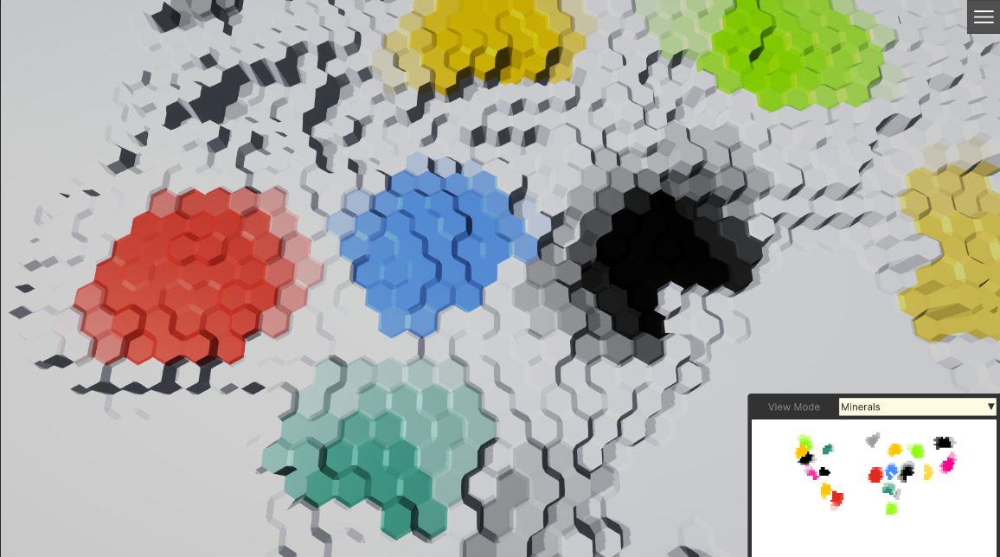

Cell Minerals Layer


This page documents the CellMinerals feature as implemented by:
CellMineralsLayer(runtime data + color map generation)ICellMineralsLayerConfig(config contract)CellMineralsLayerConfigAsset(default authoring + config implementation)CellMineralsLayerGroup/CreateCellMineralsLayerRequest(ECS-friendly creation pattern)
What problem it solves
CellMineralsLayer stores per-cell mineral data on a hex terrain:
- Mineral type per cell (an integer ID, stored as
uint) - Mineral amount per cell (stored as
float) - A derived color map (
Color32per cell) intended for visualization (minimap, overlays, debug views, etc.)
The color map encodes mineral type via a palette color, and mineral amount via interpolation between a default color and that palette color.
Core types and responsibilities
CellMineralsLayer (runtime)
File: Runtime/Minerals/Data/CellMineralsLayerGroup.cs
Holds four runtime data layers:
MineralIndexMap:ColorMapCellValueDataLayer_UInt
Per-cell mineral ID (palette index). Also owns aColorMap(per-cellColor32) and aColorPalette(Color32[]).AmountMap:CellValueDataLayer<float>
Per-cell mineral amount.MinMineralAmount:NativeListDataLayer<float>
Per-mineral threshold list (index = mineral ID). Used during color map calculation.MaxMineralAmount:NativeListDataLayer<float>
Per-mineral threshold list (index = mineral ID). Used during color map calculation.
Key override:
CalculateColorMap(JobHandle)schedulesCalcMineralsColorMapJobto updateMineralIndexMap.ColorMap.
ICellMineralsLayerConfig (configuration contract)
File: Runtime/Minerals/Data/CellMineralsLayerConfigAsset.cs
Defines what a config must provide to initialize a CellMineralsLayer:
MineralIndexMap:IInitColorMapCellValueDataLayerArgs<uint>MineralsAmountMap:IInitCellValueDataLayerArgs<float>MinMineralsAmount:IList<float>MaxMineralsAmount:IList<float>
This is what CellMineralsLayer.Init(settings, initArgs) checks for:
if (initArgs is ICellMineralsLayerConfig cellMineralsLayerConfig)
{
InitColoredDataLayer(MineralIndexMap, cellMineralsLayerConfig.MineralIndexMap);
InitDataLayer(AmountMap, cellMineralsLayerConfig.MineralsAmountMap);
MinMineralAmount.CopyValuesFrom(cellMineralsLayerConfig.MinMineralsAmount);
MaxMineralAmount.CopyValuesFrom(cellMineralsLayerConfig.MaxMineralsAmount);
}
CellMineralsLayerConfigAsset (default authoring + implementation)
File: Runtime/Minerals/Data/CellMineralsLayerConfigAsset.cs
A Unity ScriptableObject you create in the Editor to author a minerals layer.
- Implements
ICellMineralsLayerConfig - Inherits
HexTerrainLayerConfigAsset<CellMineralsLayer> CreateTerrainLayer()returnsnew CellMineralsLayer()
Create menu path (from [CreateAssetMenu]):
Assets > Create > Fwt > HexTerrains > CellMinerals > Cell Minerals Layer Config
How a CellMineralsLayer is authored (Editor workflow)
- Create a
CellMineralsLayerConfigAsset. - Configure these serialized fields:
A) _mineralIndexMap → runtime: CellMineralsLayer.MineralIndexMap
Type: InitColorMapCellValueDataLayerArgs<uint>
Used to initialize:
- the per-cell mineral IDs (values stored in
MineralIndexMap.Data) - the color palette (values stored in
MineralIndexMap.ColorMap.ColorPalette) - optional fill/random/texture-based initialization of IDs (depending on what
InitColoredDataLayer(...)applies)
Most important runtime impact for visualization:
ColorPalette: element at indexmineralIdis the base mineral color.
Note:
CellMineralsLayeruses a custom job for the final color map, but it still relies onMineralIndexMap.ColorMap.ColorPalettebeing created/populated.
B) _mineralsAmountMap → runtime: CellMineralsLayer.AmountMap
Type: InitCellValueDataLayerArgs<float>
Used to initialize per-cell mineral amounts (AmountMap.Data), with optional:
- constant fill
- random fill
- texture-based initialization
C) _minMineralsAmount → runtime: CellMineralsLayer.MinMineralAmount
Type: List<float> (index = mineral ID)
Controls the low threshold for interpolation.
D) _maxMineralsAmount → runtime: CellMineralsLayer.MaxMineralAmount
Type: List<float> (index = mineral ID)
Controls the high threshold for interpolation.
How a CellMineralsLayer is created
There are two common creation paths in this codebase.
1) ECS path: CellMineralsLayerGroup + CreateCellMineralsLayerRequest
File: Runtime/Minerals/Data/CellMineralsLayerGroup.cs
CellMineralsLayerGroupis aHexTerrainLayerGroup<CellMineralsLayer>and anIComponentData(managed component).- Layers are created using init-args; if those init-args implement
ITerrainLayerFactory, the group calls the factory.
CreateCellMineralsLayerRequest is both:
IBufferElementData(so you can store requests in a DynamicBuffer)ITerrainLayerFactory(so it can create the layer)
Creation behavior:
CreateCellMineralsLayerRequest.CreateTerrainLayer()callsArgs.Value.CreateTerrainLayer()CellMineralsLayerGroup.CreateTerrainLayer(...)setslayer.Namefrom the requestCellMineralsLayerGroup.InitTerrainLayer(...)callslayer.Init(settings, request.Args.Value)
So the authored CellMineralsLayerConfigAsset is used as:
- the factory (
CreateTerrainLayer()) - the init args (
ICellMineralsLayerConfig)
2) Non-ECS/manual path
You can create and initialize directly:
var layer = new CellMineralsLayer();layer.Init(settings, configAsset);(becauseconfigAssetimplementsICellMineralsLayerConfig)
Usage
This section ties the minerals layer into the existing ViewModes + Minimap pipeline in this package.
A) Ensure the layer exists on the terrain entity
CellMineralsLayerGroup is a managed ECS component (a class). View-mode code retrieves it via EntityManager.TryGetComponentObject<T>(...), so it must be added as a component object.
At a high level you need:
CellMineralsLayerGroupon the terrain entity (as a component object)- A buffer of
CreateCellMineralsLayerRequestentries (one entry per minerals layer instance you want) - A system (or existing init pipeline) that calls
CellMineralsLayerGroup.Init(settings, requests)during terrain initialization
Example (illustrative) ECS authoring/baking intent:
// PSEUDOCODE/EXAMPLE (not copy-paste-ready without your project-specific authoring types):
AddComponentObject(terrainEntity, new CellMineralsLayerGroup());
var buf = AddBuffer<CreateCellMineralsLayerRequest>(terrainEntity);
buf.Add(new CreateCellMineralsLayerRequest
{
Name = "Minerals",
Args = mineralsConfigAsset
});
Important: the request’s Name is what you later use with HexTerrainLayerReference.ByLayerName("...").
B) Visualize minerals via View Modes (minimap / overlays)
The render pipeline is:
UpdateColorMapTexturesSystemselects the currentIViewModeConfigfromViewModeConfigsComponent.Value- then calls
viewModeConfig.UpdateColorMap(EntityManager, terrainEntity, isViewModeDirty) - that view mode is responsible for copying some layer’s color map into one of its configured textures (via
CellColorsDataLayer.ApplyColorsToTexture)
The minimap UI wiring is:
AttachMinimapScreenSystemattachesMinimapScreenReferenceusingEnvironmentAPIComponentUpdateViewModesConfigOnUISystempushes the terrain’sViewModeConfigsComponent.Valueinto the minimap screen (minimapScreen.SetViewModesConfig(...))UpdateMiniMapScreenSystemupdates the selected view mode (minimapScreen.SetViewMode(...))
Implement a “Minerals” view mode config asset
The simplest approach is to create a ViewModeConfigAsset that:
- finds the target
CellMineralsLayer(by name or index) - updates a texture from
layer.MineralIndexMap.ColorMap
Example view mode config (copy/paste into your project as a starting point):
using Fwt.HexTerrains.Data;
using Fwt.HexTerrains.DataLayers;
using Fwt.HexTerrains.Minerals.Data;
using Fwt.HexTerrains.ViewModes.Data;
using Unity.Entities; using UnityEngine;
[CreateAssetMenu(menuName = "Fwt/HexTerrains/View Modes/Minerals", fileName = "ViewMode_Minerals")]
public class MineralsViewModeConfigAsset : ViewModeConfigAsset
{
[Header("Minerals Layer Lookup")]
[SerializeField]
private HexTerrainLayerReference _mineralsLayer = HexTerrainLayerReference.ByLayerName("Minerals");
[Header("Output")]
[SerializeField]
private int _textureIndex = 0;
public override bool UpdateColorMap(EntityManager entityManager, Entity terrainEntity, bool isViewModeDirty)
{
// Find the minerals layer (managed component object on the terrain entity)
var layer = GetTerrainLayer<CellMineralsLayerGroup, CellMineralsLayer>(entityManager, terrainEntity, _mineralsLayer);
if (layer == null)
{
return false;
}
// Copy CellMineralsLayer -> MineralIndexMap.ColorMap into a texture slot owned by this view mode config
// (ColorMap gets produced by CellMineralsLayer.CalculateColorMap -> CalcMineralsColorMapJob)
return UpdateColorMap<ColorMapCellValueDataLayer<uint>, uint>(layer.MineralIndexMap, isViewModeDirty, _textureIndex);
}
}
Then:
- Create a
ViewModeCollectionConfigAsset - Add your
ViewMode_Mineralsasset to itsViewModeslist - Assign that collection to
HexTerrainAuthoring.ViewModeCollectionConfig - Set
HexTerrainAuthoring.ViewModeto the index of your minerals view mode (or switchHexTerrainViewModeat runtime)
How it works: color map calculation
When it runs
CellMineralsLayer.CalculateColorMap(...) schedules CalcMineralsColorMapJob.
It early-outs if any required inputs are missing:
MineralIndexMapMineralIndexMap.ColorMapMineralIndexMap.ColorMap.ColorPalette.IsCreatedAmountMapMinMineralAmountMaxMineralAmount
Dirty-chunk optimization
The job skips work unless either of these are dirty for the cell’s chunk:
MineralIndexMap.ChunkDirtyGrid[chunkIndex]AmountMap.ChunkDirtyGrid[chunkIndex]
So changing mineral IDs or amounts only forces recalculation in affected chunks.
The exact color formula
File: Runtime/Minerals/Jobs/CalcMineralsColorMapJob.cs
For each cell, it computes:
Look up:
minAmount = MinMineralAmount[mineralIndex]maxAmount = MaxMineralAmount[mineralIndex]mineralColor = ColorPalette[mineralIndex]
Compute interpolation parameter:
t = math.unlerp(minAmount, maxAmount, mineralsAmount)
- Write final color:
result = Color32.Lerp(DefaultColor, mineralColor, t)
ColorMap[cellIndex] = result
Behavior at extremes
Given Unity’s Lerp clamping behavior:
mineralsAmount <= minAmount→ returnsDefaultColormineralsAmount >= maxAmount→ returnsmineralColor- between → interpolates RGBA from default to palette color
Out-of-range handling
If mineralIndex is outside any of these arrays:
MinMineralAmountMaxMineralAmountColorPalette
Then the job returns DefaultColor.
About “transparency”
Despite the config comments talking about “transparent at min, opaque at max”, the implementation is more general:
- The job interpolates full
Color32RGBA, not “alpha only”. - Transparency depends on the alpha values of:
DefaultColorColorPalette[mineralIndex]
Current CellMineralsLayer sets:
DefaultColor = new Color32(255, 255, 255, 255)(opaque white)
So, as-is, the “min amount” endpoint is opaque white, not transparent.
If you want “min = fully transparent”, the typical approach is:
- use a transparent default color (e.g.
Color32(0,0,0,0)), and/or - set palette colors’ alpha appropriately
In this package, the cleanest way is to override CellMineralsLayer.CalculateMineralsColorMap(...) (or fork and change the default).
Runtime property mapping (config → runtime)
CellMineralsLayerConfigAsset property |
Runtime target | Used for |
|---|---|---|
MineralIndexMap (_mineralIndexMap) |
CellMineralsLayer.MineralIndexMap |
Initializes per-cell mineral IDs and creates/populates the palette used by the minerals color map. |
MineralsAmountMap (_mineralsAmountMap) |
CellMineralsLayer.AmountMap |
Initializes per-cell mineral amounts. |
MinMineralsAmount (_minMineralsAmount) |
CellMineralsLayer.MinMineralAmount |
Per-mineral “low” threshold for interpolation (math.unlerp). |
MaxMineralsAmount (_maxMineralsAmount) |
CellMineralsLayer.MaxMineralAmount |
Per-mineral “high” threshold for interpolation (math.unlerp). |
How to set up CellMineralsLayerConfigAsset correctly
1) Decide your mineral ID space
If your IDs range from 0..N-1, then you must ensure all three lists cover that range:
MineralIndexMap.ColorPalette.Count >= NMinMineralsAmount.Count >= NMaxMineralsAmount.Count >= N
Otherwise, those cells will render as DefaultColor.
2) Configure the palette (MineralIndexMap.ColorPalette)
Set one Color32 per mineral ID.
Example convention:
- index
0= “no mineral” (choose a neutral color) - index
1= iron (red-brown) - index
2= copper (orange) - etc.
3) Configure amount thresholds (MinMineralsAmount / MaxMineralsAmount)
For each mineral ID i:
MinMineralsAmount[i]= the amount that maps to the “default” endpointMaxMineralsAmount[i]= the amount that maps to the “palette color” endpoint
Keep in mind:
math.unlerp(a,b,x)behaves poorly ifa == b(division by zero semantics); avoid equal min/max.- Swapping min/max flips the gradient direction.
4) Initialize the data (IDs + amounts)
Use _mineralIndexMap and _mineralsAmountMap to define how maps are initialized:
- Fill constant
- Fill random
- Apply source texture (if enabled)
Exactly which options you enable depends on your authoring intent (debug fill vs. real generation).
Updating minerals at runtime
CellMineralsLayer provides direct setters:
SetMineralIndex(int cellIndex, uint mineralIndex)SetMineralsAmount(int cellIndex, float mineralsAmount)
After changes, color map updates occur when the terrain pipeline calls CalculateColorMap(...) and the affected chunks are marked dirty by the underlying data layers.
If you need a full refresh:
- call
layer.SetAllDirty(true)to force recalculation.
Cleanup and disposal (lifecycle)
Per-frame cleanup
CellMineralsLayer.Cleanup() calls:
MineralIndexMap.Cleanup()AmountMap.Cleanup()MinMineralAmount.Cleanup()MaxMineralAmount.Cleanup()
There is also CleanupAsync(JobHandle) which schedules async cleanup and returns a combined dependency.
This is typically where dirty flags are reset/compacted by the data layer implementations.
Disposing
CellMineralsLayer.Dispose() disposes all owned native resources:
MineralIndexMap.Dispose()AmountMap.Dispose()MinMineralAmount.Dispose()MaxMineralAmount.Dispose()
Then calls base.Dispose().
If the layer is part of a HexTerrainLayerGroup<T>, disposing the group disposes nested layers as well.
Troubleshooting checklist
Color map stays unchanged:
- Ensure
CalculateColorMap(...)is being called in your update pipeline. - Ensure dirty flags are being set (or call
SetAllDirty(true)once).
- Ensure
Cells render as the default color:
- Mineral ID exceeds palette length, or min/max list lengths.
- One of the required inputs is missing (
ColorPalettenot created).
“Transparency by amount” not working as expected:
- The job interpolates RGBA from
DefaultColorto palette color. - Current
DefaultColoris opaque white; adjust via override if you need transparent-at-min behavior.
- The job interpolates RGBA from